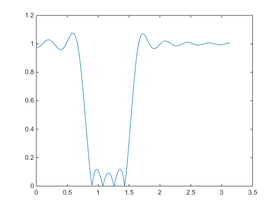

samp_freq=50;
m=53;
q_m=floor(0.1*m);
r_m=m-10*q_m;
B_L=4+0.7*q_m+2*r_m
B_H=B_L+10
S_L=B_L-2
S_H=B_H+2
delta = 0.15;
A = -20* log10(delta);
if A<21
alpha = 0;
elseif 21<=A<=50
alpha = 0.5842*((A-21)^0.4)+0.07886*(A-21);
elseif A>50
alpha = 0.1102*A(A-8.7);
end
omega_low_s1=(B_L*pi)/samp_freq;
omega_low_p1=(S_L*pi)/samp_freq;
omega_low_s2=(S_H*pi)/samp_freq;
omega_low_p2=(B_H*pi)/samp_freq;
omega_t1=omega_low_s1-omega_low_p1;
omega_t2=omega_low_p2-omega_low_s2;
N = ceil(((A-8)/(2.285*omega_t1))/2)+2
beta=alpha/N;
window=kaiser(2*N+1,beta);
omega_corner_1=(omega_low_s1+omega_low_p1)/2;
omega_corner_2=(omega_low_s2+omega_low_p2)/2;
l_1 = zeros(1, 2*N+1);
l_2 = zeros(1, 2*N+1);
l_3 = zeros(1, 2*N+1);
for k=-N:N
if k == 0
l_1(1,N+1) = omega_corner_1/pi;
l_2(1,N+1) = omega_corner_2/pi;
l_3(1,N+1) = (l_2(1,N+1)-l_1(1,N+1));
l_3(1,N+1) = 1-(l_3(1,N+1) *window (N+1 ,1));
else
l_1(1,k+N+1) = sin(omega_corner_1*k)/(pi*k);
l_2(1,k+N+1) = sin(omega_corner_2*k)/(pi*k);
l_3(1,k+N+1) = l_2(1,k+N+1)-l_1(1,k+N+1);
l_3(1,k+N+1) = -(l_3(1,k+N+1) *window (k+N+1 ,1));
end
end
[h,w] = freqz(l_3);
figure
plot(w,(abs(h)))
B_L =
13.5000
B_H =
23.5000
S_L =
11.5000
S_H =
25.5000
N =
17
